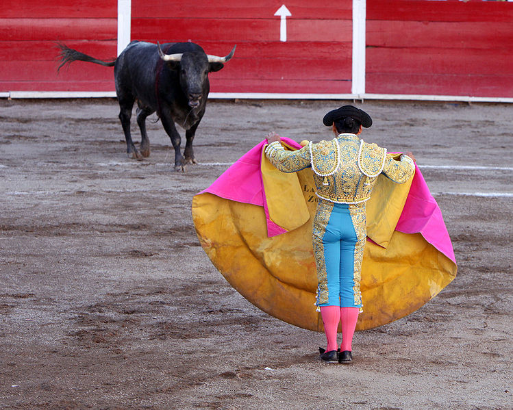

|
Coridele Ibiza Tenerife Madrid Barcelona Bilbao Valencia |
CorideleCorida (din spaniolă corrida) este o luptă cu tauri, organizată ca spectacol, practicată mai ales în Spania, în țările Americii Latine, Portugalia și în sudul Franței. Arta de a lupta cu taurii în arenă după regulile coridei poartă denumirea de tauromahie (din franceză tauromachie, cf. greacă tauros – taur + mache – luptă). Coridele, deși blamate de diferite culturi, sunt considerate un produs al artei pure în Spania. Corida înseamnă victoria omului asupra unuia dintre cele mai de temut animale: taurul. Totul contează, conduita celor care se află în arenă dar mai ales egalitatea între forțe. Din această cauză taurul este rănit la începutul fiecărei lupte, pentru a egala astfel șansele între luptători. O coridă cunoaște 4 etape: În prima fază, toreadorii merg în capela din interiorul incintei și se roagă, după care intră în ring. Lupta propriu-zisă cunoaște și ea trei etape: intră în ring „vara”, cel care testează puterea taurului (acesta este călare), acesta îi slăbește puterile taurului cu niște săbii speciale. Intră apoi în ring „los tercios de banderillas” cei care testează starea animalului după pedeapsă. În faza a treia, care se numește „muletas”, matadorul și taurul stau față în față și se înfruntă în ring. Toți cei care participă la coridă se numesc toreadori, însă cel care aplică lovitura de grație și îngenunchează taurul este matadorul (din spaniolă matador, provenit din spaniolă matar – a ucide). După fiecare victorie, matadorul taie urechile taurului și le prezintă publicului. Cea de-a patra etapă a coridei este etapa premiilor. Publicul tace în semn de pedeapsă sau ignorare a matadorului dacă acesta nu a avut o evoluție spectaculoasă, sau este primit cu urale sau cu trandafiri aruncați spre el. |